Coping & Healing
Practical, gentle ways to carry grief and stay connected to the person you lost.

Acceptance and Remembrance: Two Ideas That Shape Healthy Grief
How acceptance and remembrance work together to help people carry grief while staying connected to the person they lost.

Coping With Grief: A Practical Guide
Practical, everyday ways to cope with grief, from the first days through the months and years that follow.

Self-Compassion in Grief
Grieving people are often harsh with themselves. How self-compassion can ease guilt and help you carry loss.

Why Traditional Grief Advice Falls Short
Let go, stay busy, get closure. Why some traditional grief advice misses the mark and what to try instead.

The Honest Truth About Healing From Grief
Healing from grief does not look like getting over it. An honest picture of what healing actually looks like.
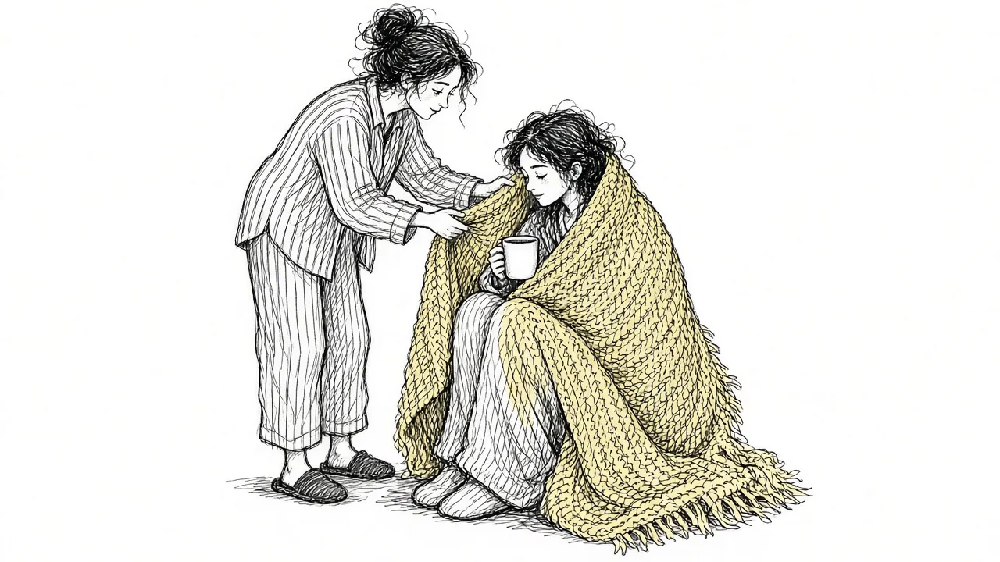
Supporting a Grieving Loved One: A Guide for Family and Friends
What to say, what not to say, and how to help someone who is grieving over the long haul.
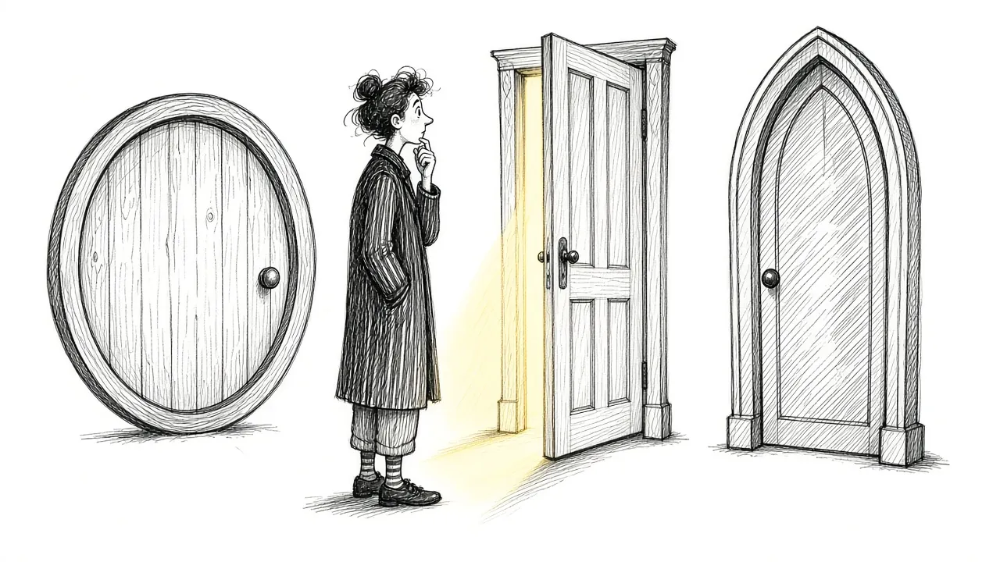
Grief Support Options: Counseling, Groups, Medication, and More
An overview of grief support options, what each offers, and how to choose what is right for you.
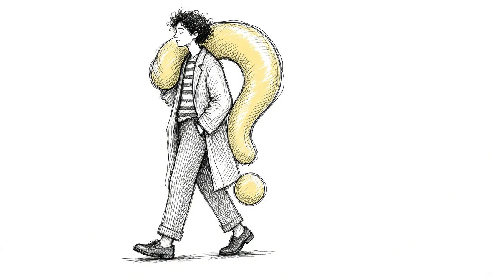
Living With Unanswered Questions After a Death
Why did it happen? Did they suffer? Did they know I loved them? How to live with the questions grief cannot answer.
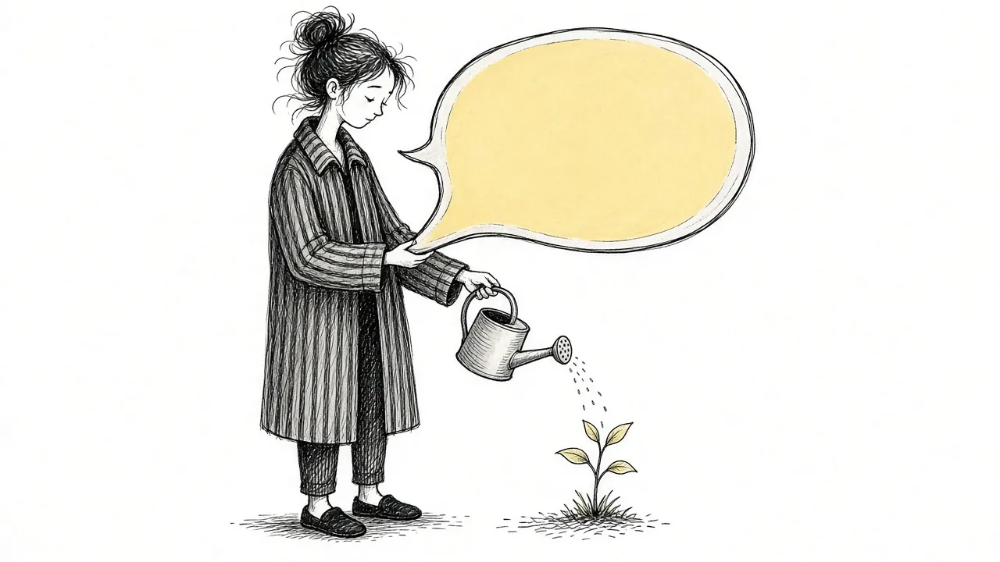
Why Being Told to "Talk About It" Isn't Always Enough
Talking helps many grieving people, but not everyone, and not always. Other ways to process grief when words fall short.

When Grief Feels Overwhelming: Ways Through the Storm
Practical, in-the-moment techniques for when grief feels like too much, plus when to reach out for urgent help.

Checking Their Phone, Keeping Their Voicemail: Grief Habits and What They Mean
Calling their number, sleeping with their shirt, keeping their room untouched. When grief habits help and when they may hold you back.
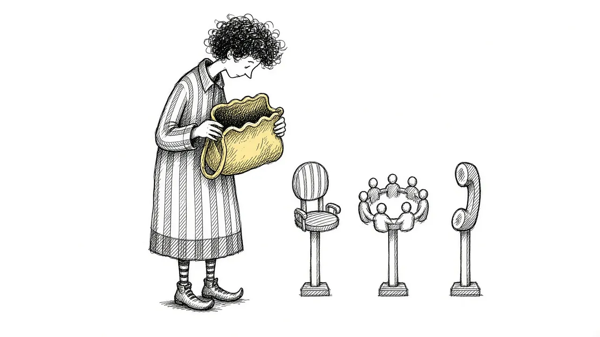
The Real Cost of Grief Support: Counseling, Groups, and Apps
Grief support ranges from free groups to private therapy. An honest look at costs and how to find support you can afford.
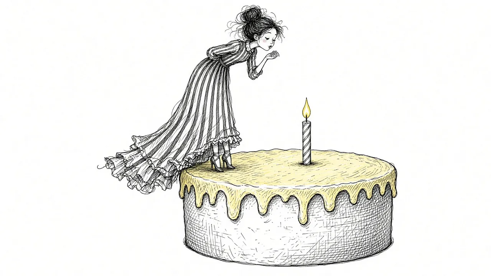
Why the First Time Doing Anything Without Them Feels Impossible
The first holiday, the first trip, the first grocery run. Why grief firsts are so hard and how to get through them.

Making Decisions After a Loss: Belongings, Homes, and Hard Choices
What to do with their things, whether to move, how to handle money. A gentle guide to making decisions while grieving.
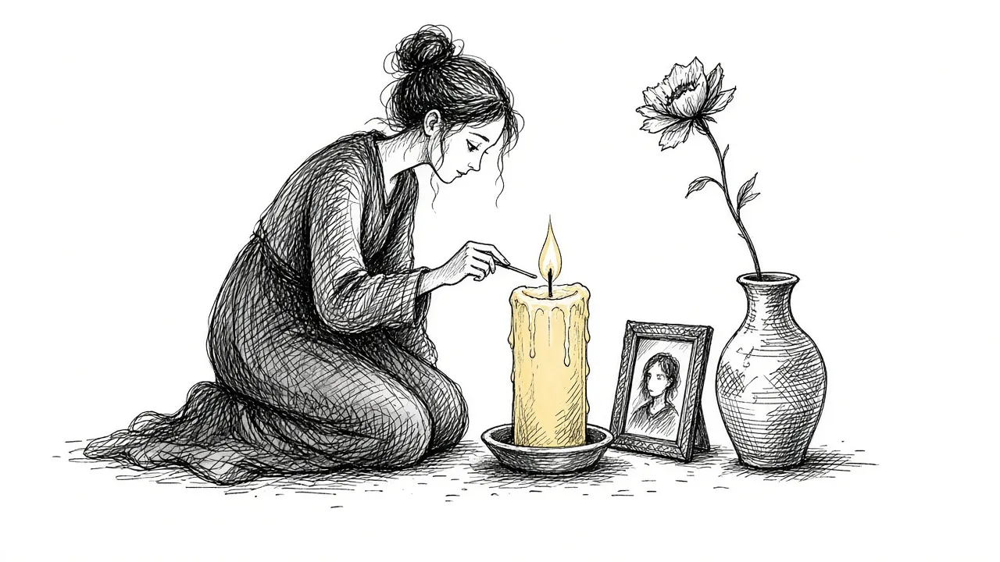
Grief Rituals: How Small Acts of Remembrance Change Things
Rituals give grief a shape and a time. Ideas for meaningful grief rituals, from daily practices to annual traditions.
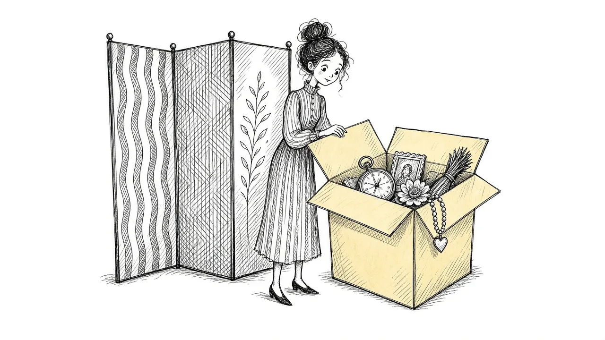
Breaking the Avoidance Cycle in Grief
Avoiding reminders of loss brings relief that does not last. Learn how the avoidance cycle works and how to gently step out of it.

Facing the Hard Places: Returning to Spaces That Remind You of Them
Their favorite restaurant, the hospital, their room. How to approach places filled with memories at your own pace.
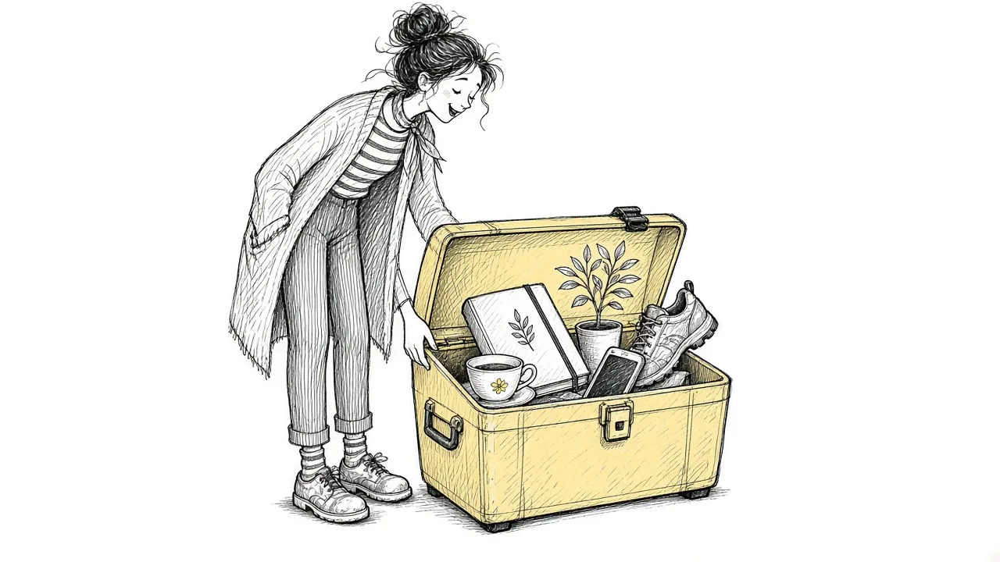
What Actually Helps With Grief: Approaches That Work
From continuing bonds to support groups to specialized therapy, here are grief approaches with real support behind them.

Grief Counseling: What It Is and What to Expect
Thinking about grief counseling? What it involves, who it helps, and how to find a good grief counselor.
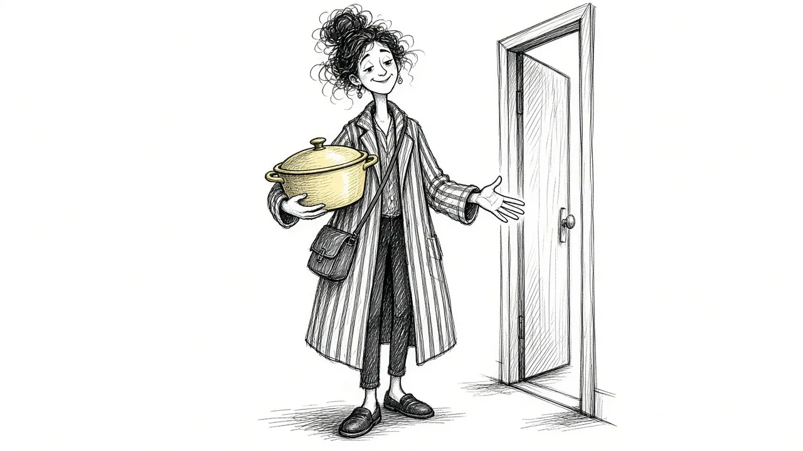
Beyond Casseroles and Checklists: A Modern Approach to Grief Support
Traditional grief support often ends after the funeral. What a more modern, ongoing approach to grief support looks like.

Beyond Fighting Grief: Why Leaning In Helps
Fighting grief often makes it stronger. Learn why leaning in, gently and on your own terms, can bring relief.

Beyond the Five Stages: How Acceptance Changes the Way We Grieve
The five stages of grief were never meant as a checklist. Learn how acceptance-based approaches offer a more realistic path.

Mindful Grieving: When Old Advice Meets a Gentler Approach
Mindfulness offers a gentler way to meet grief: noticing feelings without fighting them. Practical ways to grieve mindfully.
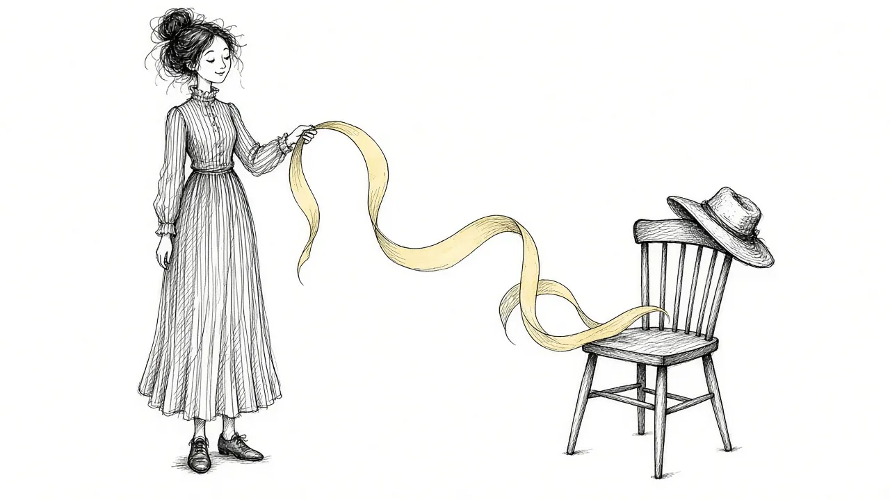
Continuing Bonds: Why Staying Connected Transforms Grief
Modern grief research suggests you do not have to let go. A guide to continuing bonds and how to keep a healthy connection with someone who died.
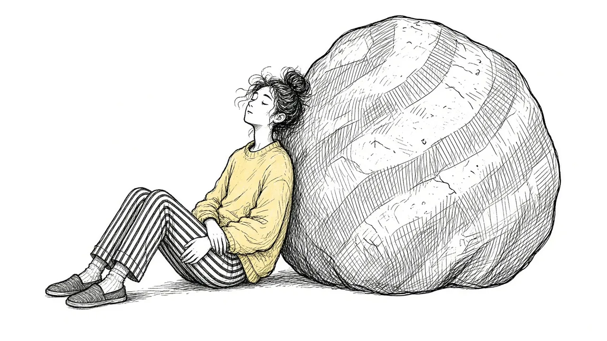
Willingness vs. Willpower: Why You Can't Force Your Way Through Grief
Grief does not respond to grit. Learn why willingness, the practice of making room for pain, often works better than trying to power through.
You do not have to carry it alone.
Start with a gentle, free check-in. A few quiet questions about how grief is showing up for you right now.
Take the Free Grief Check-In